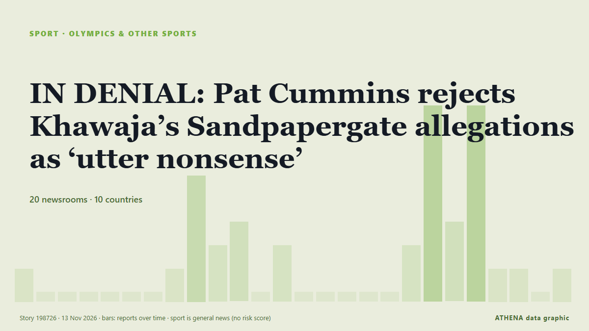

IN DENIAL: Pat Cummins rejects Khawaja’s Sandpapergate allegations as ‘utter nonsense’

Australia captain Pat Cummins hit back at former teammate Usman Khawaja’s claims over the 2018 sandpaper scandal in South Africa. de Daily Maverick
Relayé de façon indépendante par 20 médias dans 10 pays depuis le 11 nov. ; premier à l'annoncer : Sydney Morning Herald ; la couverture faiblit. Sport et culture sont classés sans évaluation du risque. La confiance est de 86 % (élevée) : 20 médias indépendants le confirment, avec une fiabilité moyenne des sources de 71 %. Médias par pays : Australie (14), Inde (10), Royaume-Uni (4). Couverture : du 11 nov. au 13 nov., 51 heures.
Ce qui a changé : 24 nouveaux articles de 16 rédactions dans les 24 heures jusqu'au 13 nov..
Premier titre : Cummins to address ‘long list’ of Khawaja allegations
Les titres sont affichés en anglais, tels que publiés.
Comment lire cette page
- Ce que vous lisez
- 20 médias dans 10 pays ont rapporté cet événement. Les reportages ci-dessous sont classés selon leur ordre de parution ; chaque titre ouvre l'article original. ATHENA n'écrit aucun reportage.
- Notre lecture
- Pour mémoire — Les reportages décrivent une affaire terminée, intérieure, commerciale ou personnelle. Nous la consignons pour que vous voyiez qui l'a rapportée et quand. Nous ne suivons pas ici de risque de conflit plus large.
- Quelle base de preuves
- Correcte Plusieurs médias indépendants concordent, mais le tableau peut encore changer.
Après retrait des doublons, des éléments hors sujet et périmés, 18 des 38 reportages listés sont retenus ; 97 % des titres correspondent à l'événement.
- Ce que cela ne veut pas dire
- ATHENA mesure la façon dont un événement est rapporté, pas sa véracité. Ce n'est ni une prévision, ni un jugement sur qui a raison, ni un conseil.
- Ce qui la changerait
- Des reportages d'autres médias indépendants montrant une évolution différente, ou une confirmation ou un démenti ferme d'une source officielle.
Lecture R2 · actualisée à chaque mise à jour de cette page. ATHENA n'a pas encore publié de bilan de ces lectures ; il sera lié ici le moment venu.
En un coup d'œil
Sélectionné, noté et rédigé par la méthodologie publiée d'ATHENA. Aucun rédacteur n'intervient sur un événement en particulier. Comment il est produit ›
| 11 Nov 08:30 UTC | 1 |
|---|---|
| 11 Nov 10:30 UTC | 0 |
| 11 Nov 12:30 UTC | 0 |
| 11 Nov 14:30 UTC | 0 |
| 11 Nov 16:30 UTC | 0 |
| 11 Nov 18:30 UTC | 0 |
| 11 Nov 20:30 UTC | 0 |
| 11 Nov 22:30 UTC | 1 |
| 12 Nov 00:30 UTC | 5 |
| 12 Nov 02:30 UTC | 2 |
| 12 Nov 04:30 UTC | 3 |
| 12 Nov 06:30 UTC | 0 |
| 12 Nov 08:30 UTC | 2 |
| 12 Nov 10:30 UTC | 0 |
| 12 Nov 12:30 UTC | 0 |
| 12 Nov 14:30 UTC | 0 |
| 12 Nov 16:30 UTC | 0 |
| 12 Nov 18:30 UTC | 0 |
| 12 Nov 20:30 UTC | 2 |
| 12 Nov 22:30 UTC | 8 |
| 13 Nov 00:30 UTC | 3 |
| 13 Nov 02:30 UTC | 8 |
| 13 Nov 04:30 UTC | 1 |
| 13 Nov 06:30 UTC | 1 |
| 13 Nov 08:30 UTC | 0 |
| 13 Nov 10:30 UTC | 1 |
Pourquoi ces chiffres
Importance
Risque
Confiance
La couverture : qui l'a annoncé, et quand
titre tel que publié · ouvre l'original- Sydney Morning Herald · AustralieWhy loss to South Africa could prove blessing in disguise for under-siege Aussies
- The Age · Australie‘Not here to share mine’: Marsh deflects Khawaja’s sandpaper allegations
- Times of India · IndePat Cummins spotted in heated conversation with wife Becky amid Sandpaper controversy
- Belfast Telegraph · Royaume-UniPat Cummins to address media on sandpaper scandal
- Sydney Morning Herald · AustralieCummins to address Khawaja 'accusations'
- CNA (Channel NewsAsia) · SingapourCricket Australia boss Boon backs Cummins' leadership amid 'Sandpapergate' row
- Stuff · Nouvelle-ZélandeAustralian test captain to address Khawaja’s ‘long list’ of sandpaper allegations
- ABC News Australia · AustralieCummins to 'respond properly' to Khawaja claims tomorrow
- Indian Express · IndeCummins invites media to training to address Khawaja’s tampering ‘allegations’
- Sydney Morning Herald · AustralieYou’ve seen the headlines. But is Usman Khawaja’s book any good?
- Business Recorder · PakistanCricket Australia boss Boon backs Cummins' leadership amid 'Sandpapergate' row
- Express Tribune · PakistanCummins to address Khawaja 'Sandpapergate' claims
- Sydney Morning Herald · AustraliePat Cummins’ captaincy is about to face its biggest moment of truth
- Sportstar · IndeCummins to address media about Khawaja’s Sandpaper-gate claims on Friday
- Nile Post · Ouganda'Wrong' and 'nonsense' - Cummins on Khawaja claims
- ABC News Australia · AustralieLive: Cummins hits out at Khawaja claims 'complete and utter nonsense'
- Sydney Morning Herald · AustralieDebutant fires Aussies to huge win over England after Warner slams Cummins comments
- SBS News · AustralieCricket's war of words ramps up as Warner claims Khawaja was thrown 'under the bus'
- Sydney Morning Herald · AustralieCummins breaks silence on 'sandpapergate'
- Sydney Morning Herald · AustralieKhawaja is 100 per cent wrong: Pat Cummins responds to sandpaper revelations
- Dawn · Pakistan'Utter nonsense', Australia skipper Cummins denies involvement in sandpaper plot
- Sky Sports · Royaume-UniCummins dismisses Khawaja's claims in 68-minute press conference
- Belfast Telegraph · Royaume-UniPat Cummins says Usman Khawaja’s sandpaper scandal claims are ‘utter nonsense’
- The Guardian · Royaume-UniPat Cummins press conference live updates: Australian cricket captain speaks about Usman Khawaja’s ‘sandpapergate’ claims
- ABC News Australia · AustralieCummins hits out at Khawaja in passionate hour-long press conference
- The Age · AustralieCummins blasts Khawaja claims in 69-minute epic presser
- Times of India · Inde'Utter nonsense': Cummins breaks silence on Khawaja's sandpaper scandal claims
- Times of India · IndeSandpaper row: Pat Cummins opens up on legal action against Usman Khawaja
- Deccan Herald · Inde'Utter nonsense': Australia skipper Pat Cummins denies involvement in sandpaper plot
- Sportstar · Inde‘Utter nonsense’: Cummins says Khawaja ‘100 per cent wrong’ on sandpaper-gate
- Sportstar · Inde‘It’s a pretty big statement’: Cummins disputes Khawaja ‘skin colour’ captaincy claim
- Sportstar · IndeDavid Warner hits back at Pat Cummins over sandpaper scandal, says Australia captain threw Usman Khawaja under the bus
- Stuff · Nouvelle-ZélandeCummins slams ‘irresponsible’ Khawaja in stunning Sandpapergate press conference
- ABC News Australia · AustralieDavid Warner slams Pat Cummins over Sandpapergate denial
- Times of India · Inde'Threw Khawaja under the bus': Warner hits out at Cummins over sandpaper row
- Al Jazeera English · QatarAustralia captain Pat Cummins denies involvement in ‘Sandpapergate’ scandal
- The National · Émirats arabes unisSandpaper saga: Pat Cummins calls Usman Khawaja allegations 'nonsense'
- Daily Maverick · Afrique du SudIN DENIAL: Pat Cummins rejects Khawaja’s Sandpapergate allegations as ‘utter nonsense’